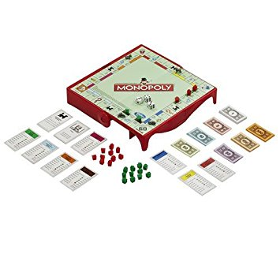

El juego de mesa mas vendido de la historia
Antes
Un juego creado con la funcion de servir como herramienta para enseñar las teorias acerrca de la justicia social y economica extraidas del estudio titulado Progreso y Misera de Henry George 
Monopoly
Comercialozado por vez primera en el año de 1936. a lo largo de los 80 años, el juego a sufrido una notable evolucion. Sus multiples ediciones y sus tantas versiones han dado pie a que se camniara desde la vaja que lo contiene hasta los elementos que lo componen logrando asi. mantenerse como el favorito a través de las decadas
Ahora
Con loa años la finalidad del juego cambio para solo disfrutar un buen rato, negociando propiedades y hasta haciendo uso de medios electronicos para todas las transacciones que requiere el juego.